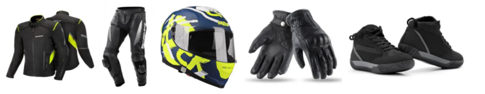
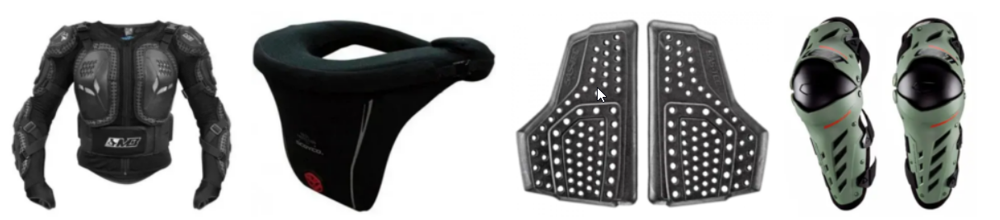

Мотоекіпіровка на кожен день.
Коли людина вперше купує мотоцикл або змінює стару модель на такий довгоочікуваний ексклюзив з новітньої мотоколлекции, природно, що йому хочеться випробувати його як можна швидше і влаштувати своє власне мотошоу. Але перед тим як виїхати з дому, потрібно подбати про свою безпеку. Адже наше здоров'я і життя по-справжньому безцінні, і будь-який ризик повинен бути виправданий. Тут мова йде не тільки про надійність вашого транспортного засобу або знанні правил дорожнього руху. Дуже важлива в цьому випадку мотоекіпіровка, яка одягається безпосередньо на тіло і захищає нас від найбільш серйозних травм при падінні з мотоцикла або дорожньо-транспортних пригодах. Види такого «обмундирування» різноманітні. Одним з найпоширеніших є мотокуртка, яка розрізняється за типом матеріалу і наявність захисних щитків. Така верхній одяг може бути шкіряною, що краще в осінньо-зимовий період для того, щоб сховатися від пронизливого дощу та вітру, або більш легкої текстильної з перфорованими отворами для літньої спеки.
Дуже добре, якщо ви вирішите все ж не економити і частиною вашої екіпіровки стане ще й моточерепаха, яка являє собою комплект твердих захисних щитків, майже на 100% захищають внутрішні органи черевної порожнини, грудну клітку і хребет з ребрами від критичних для здоров'я переломів, ударів і ударів. Щоб захистити коліна і лікті, адепти мотоциклів вже давно придумали спеціальну мотоекіпіровку - захист на коліна та лікті. Є і спеціальне взуття для справжніх байкерів: мотоботи з високою халявою, виготовлених із жорсткого матеріалу.Вони закривають всю гомілку і обов'язково застібаються на липучки і блискавки: шнурки неприпустимі, оскільки можуть заплутатися в частинах мотоцикла при їзді. Обов'язково необхідно купити шолом, вибір якого визначається стилем їзди та її умовами. За цим критерієм виділяють повністю закриті мотошлемы типу інтеграл або модуляр для екстремального спорту та довгих подорожей, кросові шоломи і відкриті шоломи для неспішних міських прогулянок. Без такого аксесуара мотоекіпіровкі навіть не варто сідати на мотоцикл, оскільки ймовірність опинитися в лікарні з важким струсом мозку, якщо щось піде не так, дуже велика. Щоб шолом не натирав, а також для додаткового утеплення і захисту від вітру, варто придбати підшоломник, а для кистей рук – спеціальні рукавиці.
Мотоекіпіровка навіть влітку?
Це питання здається досить слушним тим, хто тільки починає освоювати двоколісного металевого «коня». Але досвідчені мотоциклісти знають, що насправді це одна з найважливіших деталей мотоекіпіровкі. В будь-якій нестандартній, іноді навіть небезпечною для життя, ситуації на дорозі руки страждають найчастіше. Причому свезенная шкіра, подряпини або удари – це тільки вершина айсберга. Перед тим як придбати дану мотоекіпіровку необхідно точно визначитися, в який час року і для якого стилю їзди ви будете використовувати мотоперчатки. Якщо вони шкіряні, товщина матеріалу повинна бути не менше 1 мм. Екстремальним мотогонщика слід вибирати тільки такі рукавички, які відрізняються гарною рядком і слугуватимуть своєрідним амортизатором при зовнішніх впливах. Не забувайте і про те, що подібна мотоекіпіровка не повинна бути короткою: зап'ясті – найбільш вразлива частина при їзді, і його потрібно закривати. При цьому надто товсті рукавички ускладнять управління, а це може бути дуже небезпечним, якщо дорожнє покриття не відрізняється рівністю або, наприклад, із-за несприятливих погодних умов на ньому виникла крижана кірка. Найкраще випробувати рукавички перед покупкою під час їзди в поєднанні з кермом даного транспортного засобу.
Maecenas lacinia felis nec placerat sollicitudin. Quisque placerat dolor at scelerisque imperdiet. Phasellus tristique felis dolor.
Maecenas elementum in risus sed condimentum. Duis convallis ante ac tempus maximus. Fusce malesuada sed velit ut dictum. Morbi faucibus vitae orci at euismod. Integer auctor augue in erat vehicula, quis fermentum ex finibus.
Mauris pretium elit a dui pulvinar, in ornare sapien euismod. Nullam interdum nisl ante, id feugiat quam euismod commodo. Sed ultrices lectus ut iaculis rhoncus. Aenean non dignissim justo, at fermentum turpis. Sed molestie, ligula ut molestie ultrices, tellus ligula viverra neque, malesuada consectetur diam sapien volutpat risus. Quisque eget tortor lobortis, facilisis metus eu, elementum est. Nunc sit amet erat quis ex convallis suscipit. ur ridiculus mus